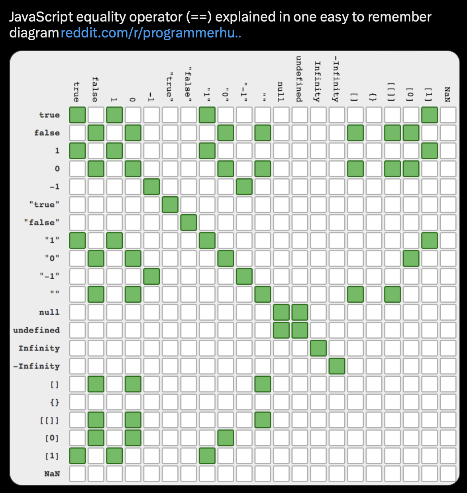

76 JS
TOC
- Misc
- Basics
- Cleaning
- Stats
- Observable
- Definitions
- Notes from covidcast dashboard
- In Browser
Misc
- Resources
- Learn Just Enough JavaScript
- Basics: variables, objects, arrays, functions, conditionals, loops
- How to run R code in the browser with webR
- Nice breakdown of generic JS code to run scripts on a webpage
- JavaScript for Data Science
- Learn Just Enough JavaScript
- hrbmstr: “javascript has the advantage over R/Python for both visualization speed — thanks to GPU integration — and interface creation — thanks to the ubiquity of HTML5 — means that people will increasingly bring their own data to websites for initial exploration first”
console.logis the print method
Basics
- Operators
//: comments...: If you want to copy all the values in your array, and add some new ones, you can use the {…} notation.${<code>}: Anything within the “\({}" get ran as code * Example: `` `\){b.letter}: $(b.frequency100).toFixed(2){style=‘color: #990000’}}%` `` backticks indicate it’s like a glue string or f string (i.e. uses code) *”b.letter” and “b.frequency” are properties in an array * “to.Fixed” is a method that rounds the value to to 2 decimal places * This was an example of a tooltip, so output would look like “F: 12.23%”
- Variables
myNumber = 10 * 1000
variableSetToCodeBlock = {
const today = new Date();
return today.getFullYear()
}- Object:
myObject = ({name: "Paul", age: 25})- Contained within curly braces, { }
- Subset property, “name”:
myObject.namewhich returns value, “Paul”myObject["name"]which is useful if you have spaces, etc. in your property names
- Types
- Map: object holds key-value pairs and remembers the original insertion order of the keys
- e.g. see Stats >> By Group
- D3 Groups, Rollup, Index Docs
- Map: object holds key-value pairs and remembers the original insertion order of the keys
- Arrays
- List of objects
- Contained within brackets, [ ]
- Each row is an “object” and each column is a “property” of that object and that property has a “value” associated with it
- Basic examples
- List of objects
myArray = [1, 2, 3, 4]
myArray = [[1, 2], [3, 4]] // arrays within arrays
myArray = [1, 'cat', {name: 'kitty'}] // objects within arrays- DF-like array
myData = [
{name: 'Paul', city: 'Denver'},
{name: 'Robert', city: 'Denver'},
{name: 'Ian', city: 'Boston'},
{name: 'Cobus', city: 'Boston'},
{name: 'Ayodele', city: 'New York'},
{name: 'Mike', city: 'New York'},
]- Equivalent Functions: Traditional vs Arrow
// traditional
function myFunctionWithParameters(firstName, lastName) {
return `My first name is ${firstName}, and my last name is ${lastName}.`
}
// arrow
myModernFunctionWithParameters = (firstName, lastName) => {
return `My first name is ${firstName}, and my last name is ${lastName}.`
}Arrow: Arguments are in the parentheses and the function is inside the curly braces
String with variables needs to be surrounded by backticks
Functions inside methods: Traditional vs Arrow
// traditional
[1, 2, 3, 4, 5].filter(function(d) { return d < 3 })
// arrow
[1, 2, 3, 4, 5].filter(d => d < 3)The argument is “d” but without parentheses and the function is “d < 3” without the curly braces
The function inputs each row/value of the array, so “d” is a row/value of the array. Then, the function does something to that row.
Conditionals
==vs===
1 == '1' // true
1 === '1' // false==is a logical test to see if two values are the same===is a logical test to see if two values are the same and also checks if the value types are the sameIf/Then
if(1 > 2) { // If this statement is true
return 'Math is broken' // return this
} else { // if the first statement was not true
return 'Math still works!' // return this
}
// using ternary operator "?"
- Using ternary operator “?”
- Syntax:
condition ? exprIfTrue : exprIfFalse - Example:
d => d.frequency >= minFreq ? "steelblue" : "lightgray"- Says if the “frequency” property is >= the variable, minFreq, value, then use “steelblue” otherwise use “lightgray”
- Syntax:
- For-Loop
let largestNumber = 0; // Declare a variable for the largest number
for(let i = 0; i < myValues.length - 1; i++) { // Loop through all the values in my array
if(myValues[i] > largestNumber) { // Check if the value in the array is larger that the largestNumber
largestNumber = myValues[i] // If so, assign the value as the new largest number
}
}
return largestNumberThe first statement sets a variable (let i = 0)
The second statement provides a condition for when the loop will run (whenever i < myValues.length - 1)
The third statement says what to do each time the code block is executed (i++, which means to add 1 to i)
While-Loop
let largestNumber = 0; // Create a variable for the largest number
let i = 0;
while(i < myValues.length - 1) {
if(myValues[i] > largestNumber) { // Check if the value in the array is larger that the largestNumber
largestNumber = myValues[i] // If so, assign the value as the new largest number
}
i++;
}
return largestNumberCleaning
- Misc
- Notes from: Horst article
- Filter objects:
myData.filter(d => d.city == 'Denver') - Select properties:
myNewArray = salesData.map(d => ({ date: d.date, product: d.product, totalRevenue: d.totalRevenue }))- In some contexts, this,
d => d["mileage (mpg)"], is also used to select columns
- In some contexts, this,
- Arrange objects:
salesData.sort((a, b) => a.totalRevenue - b.totalRevenue)- Reorders salesData by totalRevenue (low to high)
- Mutate properties:
salesData.map(d => ({...d, discountedPrice: 0.9 * d.unitPrice }))- Adds a new column to salesData with a discountedPrice, which takes 10% off each unitPrice.
- Group_By:
d3.rollup(salesData, v => d3.sum(v, d => d.totalRevenue), d => d.region)- Return the sum of totalRevenue for each region in salesData.
- Rollup might actually be a Summarize and the group_by is handled in the syntax
- Rename:
salesData.map(d => ({...d, saleDate: d.date }))- adds a new column called saleDate by storing a version of the date with new name saleDate and keeping all other columns.
- Subset value:
salesData.map(d => d.description)[3]- Access the fourth value from the description property in salesData
- Unite:
salesData.map(d => ({...d, fullDescription: `${d.product} ${d.description}`}))Unite the product and description columns into a single column called fullDescription, using a comma as a separator.
Left Join: *using {{{arquero}}} tables*
salesData.join_left(productDetails, ['product', 'product_id'])- join information from a productDetails table to salesData. Join on product in salesData and product_id in productDetails .
Stats
- Misc
- Notes from: Horst article
- In examples, “waterUsage” is the array; “waterGallons” is the property.
- Notes from: Horst article
- Mean:
d3.mean(waterUsage.map(d => d.waterGallons))- Returns a Value
- Std.Dev:
d3.deviation(waterUsage.map(d => d.waterGallons)) - Median:
d3.median(waterUsage.map(d => d.waterGallons)) - Min/Max:
d3.min(waterUsage.map(d => d.waterGallons)) - Total Observations (i.e.
nrow):waterUsage.length - By Group:
- “propertyId” is the discrete, grouping variable
- Mean:
waterMeans = d3.rollup(waterUsage, v => d3.mean(v, d => d.waterGallons), d => d.propertyId)
// Returns a map object
waterMeans
{
"A001" => 39.53389830508475
"B002" => 53.57627118644068
"C003" => 27.45762711864407
"D004" => 80.1864406779661
}
// View in a JS Table
// ** Must be in a separate cell **
Inputs.table(waterMeans.map(([propertyId, meanWaterGallons]) => ({propertyId, meanWaterGallons})))Count:
d3.rollup(waterUsage, v => d3.count(v, d => d.waterGallons), d => d.propertyId)Conditional Counts:
waterUsage.filter(d => d.waterGallons > 90 && d.propertyId == "B002").length- Applies two conditionals and counts the observations
Ranks
waterUsage.map((d, i) => ({...d, rank: d3.rank(waterUsage.map(d => d.waterGallons), d3.descending)[i] + 1}))1 is added so that ranks start at 1 instead of 0
Percentiles:
d3.quantile(waterUsage.map(d => d.waterGallons), 0.9)(e.g. 90th)
Observable
- A collaborative, online notebook platform that comes with libraries loaded to make it fairly straightforward to dive into ad hoc data analysis or produce complete reports.
- In Observable, if you’re running a JavaScript cell that contains more than just a simple variable assignment (like
myVariable = 'Hello World'), you need to run a code block (i.e. bracket lines of code in curly braces, {}). - You can open your notebook in Safe Mode and edit your work without running it.
- Good for debugging (e.g. infinite while-loops)
Definitions
- JSON vs R List
{ list(
boolean: true, boolean = TRUE,
string: "hello", string = "hello",
vector: [1,2,3] vector = c(1,2,3)
} )
// Access # Access
json.vector list$vector- Dependencies
HTML R (shiny)
<head> tags$head(
<!-- JavaScript --> tags$script(src = "path/to/file.js")
<script src="path/to/file.js"></script> tags$link(
<!-- CSS --> rel = "stylesheet",
<link rel="stylesheet" href="path/to/file.css> href = "path/to/file.css
</head> ))- d is each row and => is function
(d) => d.year === 2020says for each row in your data, the year column must equal 2020
Callback Function - a function that is passed to another function as a parameter. In other words, a function “calls back” to previously defined function.
function print(callback) {
callback();
}example (above): callback is the callback function and is a parameter of the print function
Callbacks make sure that a function is not going to run before a task is completed but will run right after the task has completed.
Anonymous Function - same as a callback but unnamed. It’s a function that is defined within another function.
setTimeout(function() {
console.log("This message is shown after 3 seconds");
}, 3000);
// if the function were named
const message = function() {
console.log("This message is shown after 3 seconds");
}
// as an arrow function
setTimeout(() => {
console.log("This message is shown after 3 seconds");
}, 3000);- example (above): the function used as a parameter has no name. console.log is the contents of the function.
// "Click here" button in a web app
<button id="callback-btn">Click here</button>
document.queryselector("#callback-btn")
.addEventListener("click", function() {
console.log("User has clicked on the button!");
});- First, button selected by its id, and then we add an event listener with the addEventListener method. It takes 2 parameters. The first one is its type, “click”, and the second parameter is a callback function, which logs the message when the button is clicked.
Notes from covidcast dashboard
- examples taken from
- covidcast dashboard: reactable + sparkline
- div = vertical label or container , span = horizontal
- format: type, styling, value
- 2 divs would result in a 2 element vertical label while 2 spans would be a 2 element horizontal label
- Example: a div container holding 2 spans which creates a “date value” horizontal label
"function (_ref) {
var datum = _ref.datum;
return React.createElement(
'div',
null,
datum.date && React.createElement(
'span',
{style: {
backgroundColor: 'black', color: 'white',
padding: '3px', margin: '0px 4px 0px 0px', textAlign: 'center'
}},
datum.date[0].split('-').slice(1).join('/')
),
React.createElement(
'span',
{style: {
fontWeight: 'bold', fontSize: '1.1em',
padding: '2px'
}},
datum.y ? datum.y.toLocaleString(undefined, {maximumFractionDigits: 0}) : '--'
)
);
}"- margin, padding
- format is top, right, bottom, left (like a clock
- requires units like “px”
- no commas separate the values
{margin: '0px 4px', padding: '0px 0px 0px 4px'}- maybe for 0s it doesn’t matter
- see bkmk in css/definitions for explanations behind specifications with less than 4 numbers
- e.g. 2 is ‘top/bottom left/right’
datum.endDate[0].split('-').slice(1).join('/')- treats variable as a string object
- looks in data arg, finds endDate variable
- its a list variable so requires the [0] (dunno about the 0 part)
- date format is ymd, so splits value by “-” separator, removes 1st value (year), joins the rest of the values (month, day) with “/”
- if split(2), removes first 2 values (left to right)
labelPosition = htmlwidgets::JS("(d, i) => (i === 0 || i === 1 ? 'right' : 'left')")- says that if index of data value, d, is 0 or 1 then label should be positioned on the right of the point, else place the label on the left of the point
In Browser
- Misc